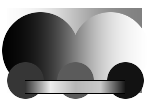
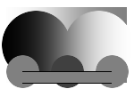
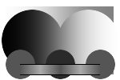
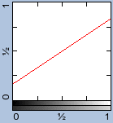
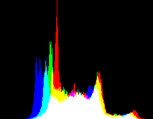
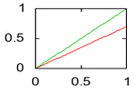

ImageMagick v6 Examples --
 Color Modifications
Color Modifications
- Index
 ImageMagick Examples Preface and Index
ImageMagick Examples Preface and Index
 Converting Color to Gray-Scale
Image Level Adjustments
Converting Color to Gray-Scale
Image Level Adjustments
- Negating Images (reversing black and white)
- Level Adjustment Operator (contrast and black/white adjustment)
- Reversed Level Adjustments (de-contrasting)
- Gamma Level Adjustment (mid-tone adjustments)
- Gamma Operator Adjustment (gamma without level adjustments)
- Level Adjustments by Color (adjust image levels using colors)
- Sigmoidal Non-linearity Contrast (non-linear contrast adjustment)
- Miscellaneous Contrast Adjustments
Adjustments Using Histogram Modification
(changing the histogram an image)
- Linear Histogram Stretching
- Normalize (auto-level stretching)
- Contrast Stretch (controlled stretching)
- Linear-Stretch (alternative stretching)
- Histogram Redistribution
- Equalize (uniform histogram redistribution)
- Gaussian Redistribution
- Histogram Redistribution Methodology
DIY Level Adjustments
(general tinting operators)
Tinting Midtones of Images
(general tinting operators)
- Uniform Color Tinting
- Midtone Color Tinting
- Sepia Tone Coloring
- Duotone Effect
- Color Tinting, DIY
- Color Tinting Overlay
Global Color Modifiers
- Modulate Brightness, Saturation, and Hue
- Modulate the Hue Color Cycle
- Modulate DIY
- Modulate in Other Colorspaces
- Modulate in LCHuv and other Colorspaces
- Color Matrix Operator
- Solarize Coloring
Recoloring Images with Lookup Tables
|
To explore these technqiues we will need a test image... Don't worry above how I actually generated this image, it is not important for the exercise. I did design it to contain a range of colors, transparencies and other features, specifically to give IM a good workout when used. |
![[IM Output]](../images/test.png)
|
generate_test", I use to create it.
| WARNING: The color processes below generally assumes the image is using a linear colorspace. Most images are however saved using a sRGB or Gamma corrected colorspace, as such to get things right colorspace correction should also applied first. |
Converting Color to Gray-Scale
Gray scale images can be very useful for many uses, such as, furthering the processing of the original image or for use in background compositions. The best method of converting an image to gray-scale is to just ask IM to magick the image into a gray-scale Color Space representation for the image. |
![[IM Output]](gray_colorspace.png)
red'
is quite a bright color compared to 'blue' which looks darker.
This is equivelent to the use of the 'rec709luma' conversion
formula with the dedicated "-grayscale" operator (Added IM v6.8.3-10).
|  |
rec709luma' value is just one of many greyscaling formula
that has been defined for use by the "-intensity" setting (see
below).
Here for example is the other common greyscaling formula
'rec601luma'
|
![[IM Output]](gray_grayscale_601.png)
|
However there a many other methods, and meanings of 'gray-scale'...
For example, you can drain all the color out of the image by using the
Modulate Operator, to set all
color saturation levels to zero.
|  |
Lightness' value from that colorspace. However using
a "-define modulate:colorspace" you can specify other colorspace
models to use. See Modulate in Other
Colorspaces below.
Note how the IM 'green' color I used for the center colored disk
in my test image is not actually a pure green, such as used in the colored
rainbow, but the half-bright green defined by the new SVG -- Scalable Vector Graphics
standard. If you need a pure RGB green you can use the color
'lime' instead. See Color Name Conflicts for more detail.
Another way is to use the FX DIY operator to
average the three channels together to get a pure mathematical meaning of
gray-scale.
|  |
The average of sRGB channel values also equivelent to the intensity channel
of 'OHTA' colorspace (red channel). Or the 'I' channel of HSI.
colorspace.
|
You can use the same adding channels technique to control the weighting of the
individual color channels. For example this is one DIY formula that you can
use...
|
![[IM Output]](gray_diy.png)
|
You can also use 'intensity' if you want the same meaning within the "-fx" operator.
|
![[IM Output]](gray_intensity.png)
|
However as the FX DIY operator is interpreted,
it can run very very slowly. For more complex operations you can use the
simpler Evaluate Operator, "-evaluate".
For example here is a 2/5/3 ratio gray-scaled image, though again I make no
attempt to preserve the transparency channel of the original image.
-recolor" color matrix operator,
which will let you specify the weighting of the three color channels.
A much more interesting technique is to extract a variety of different meanings of brightness by extracting the appropriate Color Channel from various Colorspace representations of the image. Examples see Grayscale Channels from Colorspace Representations. Image Level AdjustmentsThe most basic form of adjustment you can make to images are known as 'level' adjustments. This basically means taking the individual RGB color values (or even the alpha channel values) and adjusting them so as to either stretch or compress those values. As only channel values are being adjusted, they are best demonstrated on a gray-scale image, rather than a color image. However if you adjust all the color channels of an image by the same amount you can use them with color images, for the purposes of either enhancing, or adjusting the image. Do not confuse this with the more automatic form of level adjustments, which we will look at in the next major section of examples below, Normalize Adjustments. This function will do exactly the same operation regardless of the actual content of the image. It does not matter if the image is bright, or dark, or has a blue, or yellow tint. The operations are blind to the actual image content.![[IM Graph]](gp_noop.gif) In demonstrating these operations I will be using a modified "
In demonstrating these operations I will be using a modified "gnuplot" graph such as shown to
the right, which I generate using a special script "im_graph". The graph has
a red line which maps the given original 'x' value (representing the
gray-scale value of the top most gradient) to the 'y' value shown. The
resulting color gradient is also shown underneath the input linear gradient.
The graph shown to right is of the IM "-noop" operator which actually does nothing to an image. As such
each of the image's color values are just mapped to exactly the same value
without change. The lower gradient is thus the same as the upper gradient.
Image NegationThe simplest and most basic global level adjustment you can make is to negate the image, using the "-negate" image operator.
Essentially this makes white, black, and black, white,
, adjusting all the colors to match. That is, it will make the color
red, its complementary color of cyan, and blue, yellow, etc.
You can see this with the mapping graph shown below, as I use the "-negate" operator on both the
'test' image and the standard IM 'rose' built-in image. Note how the lower
gradient in the mapping graph image is now reversed, so that black and white
are swapped, and the same reversal appearing in the negated 'test' image.
Internally negate is actually rather stupid. It handles the three color
channels independently, and by default ignores the alpha channel. If this was
not the case, you would get a very silly result like this...
The image is negated, as you can see by the semi-transparent color gradient.
But as the transparency channel has also been negated you loose all the opaque
colors in the image. This is why the default setting for "-channel" is 'RGB'.
See Color Channels for more
information.
You can limit the negation to just one channel, say the green color channel.
This may not seem very useful, but at times it is vitality important.
The "-negate" operator
is actually its own inverse. Doing two negations with the same "-channel" setting cancels each
other out.
Negation is extremely common in image processing, particularly when dealing
with gray-scale images as a step before or after other processing options. As
such I recommend you play with it and keep it in mind whenever you are doing
anything, as working with negated images can solve some otherwise difficult
problems.
Direct Level AdjustmentsThe "-level" operator is
the more general level adjustment operator. You basically give it two values
a 'black_point' and a 'white_point', as well as an optional third value (gamma
adjustment), which I will look at later.
What it does is map any color values in the image that is equal to or less
than the 'black_point', and make them black (or a 0 value). Similarly, any
color values that are equal to or brighter that the 'white_point' will make
them white (or a Maximum value). The colors in between these two points
are then 'stretched' linearly to fill the complete range of values.
The effect of this is to improve the contrast, enhancing the colors within an
image. For example here is a 25% contrast enhancement of our test image,
using the same values as shown by the graph.
As you commonly adjust both the black and white points by the same amount from
the 0% and 100% amounts, you can just specify the
'black_point' only. The white point will be adjusted by the same amount
inward.
25% is a huge contrast enhancement for any image, but
it clearly shows what it does.
You don't have to change both the 'black' and 'white' points. Instead it is
quite permissible to just adjust only one end of the color range. For example
we can make a very light, or a very dark rose image.
-level" operator.

By using a negative value you can do some rough de-contrasting of an image.
What this means is that rather than providing a color value for the values to
be mapped to 'black' and 'white' and thus stretching out the colors in
between, you instead compress the color values so as to map the imaginary
negative color to black or white. The result is a general graying of the
image.
This method of de-contrasting an image however is very inaccurate and not recommended, unless you have an IM older than version 6.4.2 where you don't have access to the new Reversed Level Operator. ![[IM Graph]](gp_level_neg.gif) You can use the "
You can use the "-level"
operator to negate an image (as previously shown above, just by swapping the
'black' and 'white' point values given, using
"-level 100%,0".
![[IM Graph]](gp_level_thres.gif) Or by setting them to the same value, you can effectively call all the color
values in the image to be thresholded. Using "
Or by setting them to the same value, you can effectively call all the color
values in the image to be thresholded. Using "-level" to threshold an image is
exactly the same as if you used a Threshold
Operator with that value. The mapping graph shown right, shows
the results of a "-level 50%,50%" operation, and its effect
on a grayscale gradient.
Note that unlike " -threshold" the image is not automatically converted to
a grayscale image when used with the default "-channel" setting.
The general nature of using level to linearly modify an image, makes the
"-level" operator good
for general gray-scale image modifications, and mask adjustments. Add the
fact that you can modify individual channels (using the "-channel" setting) as opposed to
the whole image, makes it one of the best color modification operators
available to IM users.
Reversed Level Adjustments -- Decontrasting ImagesAs of IM version 6.4.2 the Level Operator was expanded to provide a 'reversed' form "+level" (note the 'plus'). Alternatively you can use the original
"-level" form of the
operator but add a '!' to the level argument given (for older API
interfaces).
The arguments for this variant is exactly the same, but instead of stretching
the values so as to map the 'black_point' and 'white_point' to 'black' and
'white', it maps 'black' and 'white' to the given points. In other words
"+level" is the exact
reverse of "-level".
For example here we map 'black' to a 25% gray, and white to 75% gray,
effectively de-contrasting the image in a very exact way, using the two
methods of specifying the 'reversed' form.
If you magick compare the above "+level 25%" operation with the use
of an a negative de-contrasting, "-level -25%" operator we
showed previously, you will see that are not the same. The 'plus' version
produces a much stronger de-contrasted image (it is greyer), but does so by
mapping to the exact values you give the operator, and not the 'imaginary'
values the 'minus' form used. This exact value usage is important, and one of
the reasons why the 'plus' form of the operator was added.
Of course a '25%' is again a very large value, and it is not
recommended for use with typical image work.
Note that the "-level"
and "+level", are in
actual fact the exact reverse of each other when given the same argument.
That is, one maps values to the range extremes, while the other maps from the
range extremes.
For example here we compress the colors of the test image using "+level", then decompress them
again using "-level", so
as to restore the image close to its original appearance.
![[IM Graph]](gp_level_undo.gif)
![[IM Output]](test_level_undo.png)
+level" operator is that you can completely compress all the color
values in an image to the same gray-scale level.
By specifying levels according to the values of specific colors for each
individual channel, you can effectively magick a greyscale gradient into
a specific color gradient. However this is rather difficult to calculate and
do. As such a "-level-colors" operator has also been provided that will let you
specify the black and white points in terms of specific colors rather than
'level' values. See Level by Color below.
Level Gamma AdjustmentsBoth the above "-level"
variants also allow you to use a third setting. The 'gamma' adjustment value.
By default this is set to a value of 1.0', which does not do any
sort of mid-tone adjustment of the resulting image, producing a pure linear
mapping of the values from the old image to the new image.
However by making this value larger, you will curve the resulting line so as
to brighten the image, while shrinking that value will darken the image.
For example here I use just the 'gamma' setting to brighten and darken just
the mid-tones of the image.
![[IM Graph]](gp_level_gdk.gif)
1.0 will make no 'gamma'
changes to the image. However the special value of '2.0' (see
above) can be used to get the square root of the images normalized color.
Both versions of the "-level" operate handles 'gamma' in the same way. This means you can
combine the level adjustment of the 'black' and 'white' ends with a
non-linear 'gamma' adjustment. You can also only adjust a single channel of
an image. For example, here we give an image a subtle tint at the black end
of just the blue channel, while using gamma to preserve the mid-tone color
levels of the image.
![[IM Graph]](gp_level_blue.gif)
![[IM Output]](test_blue_tint.png)
Gamma Operation AdjustmentsThe "-gamma" operator is
also provided, and has exactly the same effect as the 'gamma' setting in the
"-level" operator.
However it will let you adjust the 'gamma' adjustment level for each
individual channel as well.
Its real use is in adjusting the 'gamma' function of an image before
performing linear operations on them. For more details see Human Color Perception and Gamma
Correction.
We can also use this function to brighten the image differently for each
individual RGB channel.
-evaluate POW 2.2" will actually do a "-gamma
0.45455" (0.45455 is equal it 1/2.2) operation, which is the reverse of
a "-gamma 2.2".
One of the less obvious uses of " -gamma" is to zero out specific image channels (see Zeroing Color Channels). Or color an
image completely 'black', 'white' or some other primary color (see Primary Colored Canvases).
Level Adjustment by ColorThe "-level-colors" operator was added to IM v6.2.4-1. Essentially, it
is exactly the same as the Level Operator we discussed
above, but with the value for each channel specified as a color value.
That is, the "-level-colors" option will map the given colors to 'black' and
'white' and stretching all the other colors between them linearly. This
effectively removes the range of colors given from the image.
And while this works, it is not particularly useful, as it is prone to fail
for colors that have common values in some channel. For example, the colors
'DodgerBlue' and 'White' have the same color values
in the blue channel. As such, "-level-colors DodgerBlue,White"
may not always magick those colors to black and white.
The better technique in that case is to extract a greyscale image of the
channel with the highest differences (such as red) and level or normalize that
channel.
WARNING: watch out for 'transparent' colors.
The plus form of the operator " +level-colors" on the other hand is extremely useful as it will
map the 'black' and 'white' color to the given values compressing all the
other colors linearly to fit the two colors you give.
For example lets map 'black' and 'white' to
'green', and 'gold'...
As you can see the grayscale gradient is remapped into a gradient bound by
the colors given, and although colors outside a gray-scale range are also
modified, they will also follow the basic style of the color range
specified. This makes the "+level-colors" operator an extremely useful one, especially when
mapping grayscale images.
If you only supply one colorname but include a comma, the missing color will
default either to 'black' or 'white' as appropriate.
![[IM Output]](levelc_dodger.png)
![[IM Output]](levelc_gold.png)
![[IM Output]](levelc_lime.png)
![[IM Output]](levelc_red.png)
![[IM Output]](levelc_darkgreen.png)
![[IM Output]](levelc_firebrick.png)
![[IM Output]](../color_basics/cow_replace_red.gif) If I had just performed a simple Direct
Color Replacement converting pure black colors to red, I would end up with
the horrible image (showen right). See Fuzz
Factor for the example used to generate that image.
Of course if you want one of the colors to be made transparent instead you are
better off using the -alpha Shape
operator instead, as this requires you to transfer the gradient into the alpha
channel.
If I had just performed a simple Direct
Color Replacement converting pure black colors to red, I would end up with
the horrible image (showen right). See Fuzz
Factor for the example used to generate that image.
Of course if you want one of the colors to be made transparent instead you are
better off using the -alpha Shape
operator instead, as this requires you to transfer the gradient into the alpha
channel.
If you only specify a single color, without any 'comma' separator, that color will be used for both black and white points. That means all the colors in the image will be reset to that one color. (according to the current " -channel" setting limitations).
-fill DodgerBlue -colorize
100%" to Colorize Images (see below).
If you want to set the images transparency setting as well you will need to
set "-channel" to
include the transparency channel, OR set the Alpha
Channel to fully-opaque, using either "-alpha opaque" or
"-alpha off".
+level-colors" is a gradient color replacement, a linear tinting
operator, and can also completely reset colors.
Sigmoidal Non-linearity ContrastFrom a PDF paper on 'Fundamentals of Image Processing' (page 44) they present an alternative to using a linear contrast control (level), with one using gamma correction known as 'sigmoidal non-linearity contrast control'. The result is a non-linear, smooth contrast change (a 'Sigmoidal Function' in mathematical terms) over the whole color range, preserving the white and black colors, much better for photo color adjustments. The exact formula from the paper is very complex, and even has a mistake, but essentially requires with two adjustment values. A threshold level for the contrast function to center on (typically centered at '50%'), and
a contrast factor ('10' being very high, and '0.5'
very low).
-fx"
implementation of the above formula, resulting from a very high contrast value
of '10' and a '50%' threshold value. These values
have been rolled into the floating point constants, to speed up the function.
10' was a very heavy contrast factor. In fact anything
higher than this value can be considered to be more like a fuzzy threshold
operation, rather than a contrast enhancement.
For a practical example of using this operator see the advanced "Gel" Effects Example, where it is used
to sharpen the bright area being added to a shaped area color.
Miscellaneous Contrast Operators
-contrast and +contrast
Rather useless minor contrast adjustment operator
-threshold
Threshold the image, any value less than or equal to the given value is
set to 0 and anything greater is set to the maximum value.
Note that like level, this is a channel operator, but if the default
'channel setting' is used only the gray-scale intensity of the image is
thresholded producing a black and white image.
magick rose: -threshold 45% x:
You can force normal channel behaviour, where each channel is thresholded
individually buy using "-channel All"
magick rose: -channel All -threshold 45% x:
-black-threshold
-white-threshold
This is like -threshold except that only one side of the threshold value is
actually modified.
For example, here anything that is darker than 30% is set to black.
magick rose: -black-threshold 30% x:
magick rose: -white-threshold 50% x:
These operators however do not seem to be channel effected, so may only be
suitable for gray-scale images!
Adjustments Using Histogram ModificationThis section was a joint effort by Fred Weinhaus and Anthony Thyssen. What is a histogram? A histogram is a special type of graph. It simply sorts the color levels of the pixels in an image into a fixed number of 'bins' each of which span some small range of values. As such each bin contains a count of the number of color levels (pixel values) in the image that fall into that range. The result is a representation of how the color values that make up an image are distributed, from black at the left, to white at at the right.
![[IM Output]](../img_photos/chinese_chess.jpg)
![[IM Output]](chinese_contrast.png)
 -contrast, is a simple Level type operator that adds just a little more contrast to the image.
the result of this is that the histogram itself is spread out more, causing it
to cover the whole of the possible color range better.
You can also see from the histograms, before and after, that the colors will
also end up with gaps and holes between the 'bins', due to the way in which
the stretching was performed. Specifically it creates a 'histogram' with all
the colors being places into 'bin'. These 'binned' colors are then modified as
a whole, causing the image colors to be grouped together. It is not
a particularly good way of handling image colors.
This operator however works blindly, without any knowledge of the image
content or color distribution. It thus cannot be done without some user
control, as the operator could very easily make any image it is applied to,
worse, rather than better.
In this section we will look at image processing operators that examine the
image's histogram as part of its decision making process. It then modifies
images using the result this study, so as to enhance some quality of the image
color distribution. As these operators make use of actual information coming
from the image being processed, they can often be used more globally over many
images with much checking by the user.
Operators of this type include automatic linear 'level' type operators such as
"-normalize",
"-contrast-stretch", and "-linear-stretch", but
also non-linear ones such as "-equalize", and others that may eventually be included into
ImageMagick such as Fred
Weinhaus's script, "redist".
Histogram StretchingThe simplest techniques, like the previous example simply stretch the histogram of the image outward to improve the color range. However instead of just blindly picking the black-point and white-point for Level operation, they select points based on the images histogram. Basically they count up the number of color values in each histogram bin, from each of the two ends, inward until they reach some threshold. These points will then be used as the black-point and white-point for the histogram (level) stretching. Diagram needed Basically the histogram counts provide the graylevel values that the stretch will force to black and white. This means that all pixels in the image that fall within the range of bins from pure black to the selected black-point bin's corresponding graylevel will end up pure black. Likewise those pixels in the image that fall within the range of bins from from pure white to the white-point bin's corresponding graylevel will end up pure white. The pixels that are outside these points however will have been stretched outside the possible color range of values, and as a result they will be simply be set to the range limits. That is these pixels are 'clipped' 'burned-in' as they are converted to the extreme of pure black or pure white color values. As a result if the 'threshold' limits for selecting the black-point and white-point is set too high, you will get lots of black and white areas in the image, with the resulting histogram having large counts (tall bars) at the extreme end bins. Example of severe burn-in -- Chinese Chess Image? Summary of 'stretch' operators... -contrast-stretch, and -linear-stretch all generate a histogram (using 1024 bins) to determine the color position to stretch. as such it is not 'exact'. The other difference is how 'zero' is handled, and that -linear-stretch actually does a -level operation to do the stretch, while -contrast-stretch uses histogram bin values for color replacement stretching (which introduces a 1024 quantum rounding effect. -normalize uses -contrast-stretch internally. A mathematically perfect normalization stretching operator is -auto-level. While a perfect 'white-point only' or 'black-point only' version is posible it has not been implemented at this time.Auto-Level - perfect mathematical normalizationThe "-auto-level"
finds the largest and smalled values in the image to use to stretch the image
to the full Quantum Range. At no time will values become 'clipped' or 'burned'
as a result of the histogram being stretch beyond the value range.
The "-channel" setting
will determine if all channels are stretch equally 'in sync' (using the
maximum and minimum over all channels) or separatally (each individual channel
as a separate entity).
At this time the hidden color of fully-transparent pixels, are also used in
determining the levels, which can cause some problems when transparency is
involved. This is regarded as a bug.
FUTURE: We actually need three modes of operation... synced color channels with 'alpha' (and 'read') masking. synced channels (as defined by channel) (current default) individual separate channels (currently if -channel is set by user)It is a pure-mathematical histogram stretch just as the manual Level Operator is. That is the minimum will be adjusted to zero and maximum to Quantum range, and a linear equation is used to adjust all other values in the image. It does not use 'histogram bins' or any other 'grouping of values' that other methods may use for either determining the levels to be used, or other histogram adjustments. NormalizeThe "-normalize"
operator is the simplest of these three operators. It simply expands the
grayscale histogram so that it occupies the full dynamic range of gray values,
while clipping or burning 2% on the low (black) end and 1% on the on the high
(white) end of the histogram. That is, 2% of the darkest grays in the image
will become black and 1% of the lightest grays will become white.
This is not a large loss in most images, and the overall result is that the
contrast (intensity range) of the image will be automatically maximized.
An idealized diagram is needed here!
Example using chinese chess?
Here we create a gray-scale gradient, and expand it to the full black and white
range.
![[IM Output]](gray_range.jpg)
-normalize" worked purely as a grayscale operator. That is, each of
the red, green, blue, and alpha channels were expanded independently of each
other according to the "-channel" setting.
As of IM version 6.2.5-5, if only the default "+channel" setting is given,
then "-normalize"
will tie together all the color channels, and normalizes them all by the same
amount. This ensures that pixel colors within the image are not shifted.
However, it also means that you may not get a pure white or black color pixel.
For example here we added some extra colors (a blue to navy gradient) to our
normalization test image.
![[IM Output]](color_range.jpg)
-normalize" maximized all the
channels together so one channel has a zero value, and another channel has a
maximum value. That is, no black pixels were generated, as all the added blue
colors already contain 'zero' values in the 'red' and 'green' channels. As
such the lower bounds of the image did not expand.
red' and 'green' channels
were lightened, while the 'blue' channel is only darkened
slightly.
This brings use to an important point
Normalise and other Histogram operators are really grayscale operators,
In actual fact, "caution is needed when using it with color images. -normalize" is just a subset of the more general "-contrast-stretch" with
default values for black-point 2% and white-point=1%. So what is "-contrast-stretch"?
contrast-stretchThe "-contrast-stretch" operator (added IM v6.2.6) is similar to
"-normalize", except
it allows the user to specify the number of pixels that will be clipped or
burned-in. That is it provides you with some control over its selection of the
'black-point' and 'white-point' it will use for the histogram
stretching.
Thus the user specifies a count (or percent counts) of
the darkest grays in the image become black and the count of the lightest
greys to become white.
For example, this will replace both the top and bottom 15% of colors with
their extremes (white and black), stretching the rest of the 70% of colors
appropriately. The final result is to try to improve the overall contrast of
the image.
![[IM Output]](stretch_gray.jpg)
-threshold-black")
One important aspect of "-contrast-stretch" is the use of zero for the black-point
and white-point threshold counts. In this case, "-contast-stretch
0", will locate the minimum and maximum bins in the image's histogram.
Since the counts actually begins at these bins, the result is simply to
stretch the min and max bins to full black and full white. This will result
in a contrast stretch with a minimum or possibly zero amount of clipping, with
all the values in those 'bins' becoming 0 and maximum values.
Histogram RedistributionHistogram redistribution is a non-linear technique that redistributes the bins in a histogram in order to achieve some particular shape. The two most common shapes are uniform (flat) and Gaussian (bell-shaped), although Hyperbolic and Rayleigh are other types of distributions have also been used.Equalize - Uniform Histogram RedistributionFor the case of an uniform distribution, the histogram bins are shifted, spaced and combined so that on average the histogram has a flat or constant height across the whole range. This is called histogram equalization. The IM function, "-equalize",
does this.
Unfortunately, it operates on each channel separately, rather than applying
the same operation to all channels. As such, color shifts are possible, when
it is applied to RGB colorspace.
Here is an example of histogram equalization using the IM function -equalize.
Notice the color balance shift from the equalization on each channel
independently.
![[IM Output]](../img_photos/zelda.png)
![[IM Output]](zelda_equal.png)
![[IM Output]](zelda_hist.gif)
![[IM Output]](zelda_equal_hist.gif)
![[IM Output]](zelda_ghist.gif)
![[IM Output]](zelda_equal_ghist.gif)
![[IM Output]](zelda_uniform_hist.gif)
-equalize" operator.
Specifically, all the colors are preserved, without the color shift you saw
previously.
What the script does is work on the grayscale histogram, which it then applies
to all the color channels, so that all the colors are kept together.
For comparison with the IM "-equalize" histograms, lets show the grayscale histogram results
here, too. Note that the redistributed histogram appears to be a bit more
leveled out (flat, or uniform) than that of IM equalize.
![[IM Output]](zelda_uniform_ghist.gif)
Gaussian RedistributionEqualizing a histogram is not the only way of changing the histogram distribution of an image. Actually it isn't normally very useful, except in computer vision applications. Here is the same image, but transformed so its histogram has a Gaussian (bell-shaped) distribution. The values used here are a 60% gray mean, with a 60 sigma roll-off to either side of that mean.
![[IM Output]](zelda_gaussian.png)
![[IM Output]](zelda_gaussian_ghist.gif)
Histogram Redistribution MethodologySo how does this type of direct histogram adjustment work? Basically it computes the histogram of the current image and that of the desired distribution. It then works out how the graylevel value of each 'bin' needs to be changed so that the counts in the bins best follow the desired distribution. Some bins may be shifted darker, while others may be shifted lighter. This is actually quite an involved process, so lets go though it step by step.First, we need to get the actual histogram data from ImageMagick, rather than a graphic image of the histogram. Note that the data is from all the color values, combined into a grayscale. This was done so as to distribute all the channels together, and adjust the image overall brightness to follow to the desired curve.
![[IM Output]](zelda_hist_graph.gif)
tr", short for
'translate'). This raw data is then given to another utility program called
"awk", which is used to collect the actual histogram counts for
each bin.
So that we can look at the results, I also process the histogram counts into a
gradient image (via the NetPBM, PGM text
grayscale image file format, and magick display it as a line graph using the
"im_profile" script.
Essentially this is just a different way of generating a histogram image,
though this time directly from a numerical data file.
Now that we have the histogram data in a text file, we also need the histogram
of the function we want the redistributed data to match. In this case, it is
a Gaussian distribution with a mean value of 153 (60% gray) and sigma width of
60. Both values are in terms of the 256 range of the histogram 'bins'.
![[diagram]](../img_diagrams/redist_working.jpg)
![[IM Output]](zelda_redist_graph.gif)
DIY Level AdjustmentsMathematical Linear Histogram AdjustmentsThe various basic forms of Level Adjustments shown above linearly adjust the colors of the image. These changes can be applied mathematically as well. For example by multiplying the image with a specific color, we set all pure white areas to that color. So lets just read in our image, create an image containing the color we want, then multiply the original image with this color using the IM free-form "-fx" or DIY Operator.
![[IM Output]](fx_linear_white.png)
-fx" to read the
color from a second 'v' image makes it easy to change the color,
without needing to magick colors to RGB values for use in the mathematics.
If you were using a fancy graphical image processing package like "Gimp" and "Photoshop" the above operation would have been applied to an image
by adjusting the images color histogram graph 'curve'.

For example to the right is a "gnuplot" generated graph (See the script "im_histogram") of the
mathematical formula showing what happens to just one of the three RGB
channels. The original color (green line) is remapped to a darker color (red
line) linearly.
Linearly tinting the black colors is also quite simple. For example
to linear map 'black' to a gold like color
'rgb(204,153,51)', (while leaving 'white' as
'white'), would require a mathematical formula such as...
result = 1-(1-color)*(1-intensity)This formula negates the colors, multiples the image with the negated color wanted, and negates the image back again. The result is tinting of the black side of the gray scale, leaving white unchanged.
![[IM Output]](fx_linear_black.png)
black' and 'white' end of the grayscale with
specific colors.
![[IM Output]](fx_linear_color.png)
-size 1x2 gradient:color1-color2" in the above is only used
to generate a two color pixel image for the "-fx" formula to reference. The first
color replaces white, while the second replaces black, while all others are
interpolated between white and black. As is typical of a gray-scale operator,
each RGB channel is treated as a separate gray scale channel, though the
linear interpolation is different for each channel.
This by the way is exactly equivalent to the Level
Adjustments by Color operator "+level-colors"
Mathematical Non-linear Histogram AdjustmentsWhile linear color adjustments are important, and faster methods are available, there are many situations where a linear 'level' adjustment, is not what is wanted, and this is where the "-fx" DIY Operator, becomes more
useful.
Well an alternative formula for linear adjustment is "-fx
'v.p{0,1}+(v.p{0,0}-v.p{0,1})*u'", which has the advantage that the
'u' can be replaced by a single random function
'f(u)' to produce non-linear color change.
This lets you do more interesting things. For example what if in the last
example you wanted to push all the colors toward the 'black'
side, resulting in the image being a more 'firebrick' color.
![[IM Output]](fx_non-linear_plot.jpg)
![[IM Output]](fx_non-linear.png)
u^2' to tint
the black end of the histogram to a '.25' blue color. Only the
blue channel needs to be modified, so the value was inserted directly into
the formula.
However while this produced a reasonable result it does darken the mid-tone
grays slightly, producing a sickly off-yellow color.
To avoid this a 'exponential' function can be used instead, to give better
control of the tinting process.
![[IM Output]](fx_expotential_plot.jpg)
![[IM Output]](fx_expotential.png)
4.9') is the falloff back to a linear
'+u' graph. The smaller this value is the slower the fall off,
and the more linear the adjustment becomes. The larger the value, the more
dramatic the 'fall-off'. The value may need to be adjusted for different
color values, so this is not a good general formula for general black color
tinting, but perfect for tinting weather maps.
Generally if you can express the color adjustment you want mathematically, you
can then use "-fx" operator
to achieve the results you want.
'Curves' Adjustments![[diagram]](../img_diagrams/curves_gui.gif) Normally in a graphical photo editor you would be presented with a histogram
'curves' chart such as I have shown to the left. The user can then edit the
'curve' by moving four (or more) control points, and the histogram adjustment
function will follow those points.
The control points generally specify that the first grayscale level is after
adjustment to become the second grayscale level. So a point like 0.0,0.2
basically means that a 0% gray (black) should after adjustment be a 20% gray
level.
Now IM does not allow you to directly specify 'control points' to generate a
'curve' adjustment, what it wants is the mathematical formula of that 'curve'
generated. Lucky for us there are programs that can generate that curve
formula from the control points, including "
Normally in a graphical photo editor you would be presented with a histogram
'curves' chart such as I have shown to the left. The user can then edit the
'curve' by moving four (or more) control points, and the histogram adjustment
function will follow those points.
The control points generally specify that the first grayscale level is after
adjustment to become the second grayscale level. So a point like 0.0,0.2
basically means that a 0% gray (black) should after adjustment be a 20% gray
level.
Now IM does not allow you to directly specify 'control points' to generate a
'curve' adjustment, what it wants is the mathematical formula of that 'curve'
generated. Lucky for us there are programs that can generate that curve
formula from the control points, including "gnuplot",
"fudgit", "mathematica", and "matlab", as well as many more mathematical software packages.
The following is one method you can use to generate the formula from four
control points using "gnuplot" which is a standard extra package
you can install on most linux distributions, as well as windows.
gnuplot" generated image above,
the function generated fits the control points perfectly. Also as it generated
a "-fx" style formula it can be used
as is as an IM argument.
im_fx_curves" to call
"gnuplot", and output a nicer looking polynomial equation of the
given the control points. Gabe Schaffer, also provided a perl version (using a
downloaded "Math::Polynomial" library module) called "im_fx_curves.pl" to do
the same thing. Either script can be used.
For example here is a different curve with 5 control points...
im_fx_curves" with a
special '-c' option...
Tinting ImagesUniformly Color Tinting ImagesTypically tinting an image is achieved by blending the image with a color by a certain amount. This can be done using an Evaluate Operator or Blend Images techniques, but these are not simple to use. Lucky for us a simpler method of bleeding an uniform color into an image is available by using the "-colorize" image operator. This operator blends the current
"-fill" color,
into all the images in the current image sequence. The alpha channel
of the original image is preserved, with only the color channels being
modified.
For example lighten an image (gray scale or otherwise) we use "-colorize" to blend some amount
of white into the image, making it brighter without saturating the image
completely.
![[IM Output]](colorize_lighten.png)
black' fill color to darken an image.
![[IM Output]](colorize_darken.png)
gray50' is the exact middle color of
the RGB color spectrum.
![[IM Output]](colorize_grayer.png)
-colorize"
operator also allows you to specify dissolve percentages for each of the three
color channels separately. This is useful for linearly darkening (or
lightening) an image in a special way.
-alpha opaque" or "-alpha
off" operation in the above to ensure the resulting image is the
completely blank image you expect.
Note that you can blank canvases faster using Level
Adjustments by Color operator with a single color, rather than a range of
colors. See also Blank Canvases.
Midtone Color TintingWhile the Colorize operator applies the "-fill" color to tint all the colors
in an image linearly, the "-tint" operator applies the "-fill" color in such a way as to
only tint the mid-tone colors of an image.
The operator is a grayscale operator, and the color is moderated or enhanced
by the percentage given (0 to 200). To limit its effects it is also adjusted
using a mathematical formula so that it will not effect black and white.
but have the greatest effect on mid-tone colors of each color channel.
A "-tint 100" essentially will tint a perfect gray color so that
it becomes half the intensity of the fill color. A lower value will tint it
to a darker color while a higher value will tint it so toward a perfect match
of that color.
![[IM Output]](tint_red.png)
green', which is only half as bright as a true green
color. As such it is also a mid-tone color, and thus is affected by the
"-tint" operator, becoming
darker, unlike red and blue color spots of the test image.
Also you can tint the individual color components, by using a comma separated
list of percentages. For example "-tint 30,40,20,10". This
however can be tricky to use and may need some experimentation to get right.
Better to specify the color you want for perfect 50% grays.
-shade", (See Shade Overlay Highlight Images), such
as the examples in 3d Bullet Images.
You can also use "-tint"
to brighten or darken the mid-tone colors of an image. This is sort of like a
'gamma adjustment' for images, though not exactly.
For example using a tint value greater than 100 with a 'white'
color will brighten the mid-tones.
![[IM Output]](tint_lighter.png)
Sepia Tone ColoringA special photographic recoloring technique, "-sepia-tone" is basically
consists to converting the image into a gray-scale, and coloring all the
mid-tones to a special brown color.
Goldenrod'.
The most common use of this is to generate a Duotone
Effect so as to generate 'old looking' photos (See wikipedia on Sepia Tone).
For example here I Tint a contrast enhanced gray-scale
rose image, using various colors, to achieve similar sepia-tone like effects.
Which color you should use on the exact effect you are looking for.
Duotone EffectA 'duotone' is a printing method where you mix the grayscale of an image (black ink) with some other color to produce a better result, with a limited budget or printing equipment. For example the reason all the old photos you see today have a sepia-tone look about them, is because sepia-tone inks survived and did not deteriorate, or fade with time. Other 'black and white' images formats faded into uselessness. See the Sepia Tone Operator above. Another duotone technique known as 'Cyanotype' (more commonly known as 'blue-prints') became widely used as method of making large scale copies of the original black and white architect drawings. Remember this tenchique was used long before the invention of lazers and from that photo-copying (and Xerox). For more information see the Wikipedia entry for Duotone, also Fake duotones vs Real duotones. The above Tint Operator however produces a reasonable facsimile of the duotone effect, just as it did for a sepia-tone like effect above.
Black', 'Chocolate', and
'LemonChiffon' for the duotone. And yes the black-point color is
typically left black, which is why it is usally called duo-tone.
Color Tinting, DIYOne of the biggest problems with "-tint" is that it is a grayscale (or vector) operator. That is, it
handles each of the red,green,blue channels completely separately to each
other. That in turn means that a primary and secondary color like
'blue' or 'yellow' are not affected by "-tint", even though all the gray
levels are.
However thanks to various channel mathematical transforms such as the
FX Operator and the faster Evaluate and Function Operators, you can generate your own color overlays
to modify the image. That is, to Tint the image in a
similar what that the Colorize Operator does.
For example, here I magick an image's gray-scale brightness level into a
semi-transparent overlay of the specific color wanted.
black'
as the color is not treated as a vector addition, but an alpha composition.
The result is not quite the same as what you would get for a normal tint.
Color Tinting OverlayThe special Alpha Composition methods 'Overlay' and 'Hardlight' were actually designed
with color (and pattern) tinting in mind. These compose methods also will
replace mid-tone grays leaving black and white highlights in the image alone.
Overlay' is much more
linear form of tinting than the quadratic function used above, and like
"-tint" is applied to each
channel of the image separately such that primary and secondary colors are
also left unchanged.
Also no adjustment control is provided by this alpha composition method, so if
you want to control the level of tinting, you will need to adjust the
overlay image transparency before applying the tint.
Of course unlike the other tinting methods I have shown so far, you are not
limited to tinting a simple color, but can apply a tint using an image, or
tile pattern.
Global Color ModifiersModulate Brightness, Saturation, and HueThe "-modulate"
operator is special in that it modifies an image in the special HSL
(hue-saturation-lightness) colorspace. It converts each color pixel in into this color space and
modifies it and converts it back to its original color space.
It takes three values (though later values are optional) as a percentage such
that 100 will make no change to an image. For example..
0' will produce a pure
black image, you cannot produce a pure white image using this operator on its
own.
The second value saturation is also a multiplier adjusting the overall
amount of color that is present in the image.
0' will produce a grayscale image, as was also
shown in Converting Color to Gray-Scale above. The
gray however mixes all three color channels equally, as defined by the HSL
colorspace, as such does not produce a true 'intensity' grayscale.
Essentially small values produce more 'pastel' colors, while values larger
than '100' will produce more cartoon-like colorful images.
Note that as the brightness and saturation are percentage
multipliers, you would need to multiply by a very large number to change
almost all the image color values to near maximum. That is you would need to
use a brightness factor of close to one million, to make all colors
except pure black, white.
Hue ModulationThe final value, Hue, is actually much more useful. It rotates the colors of the image, in a cyclic manner. To achieve this the Hue value given produces a 'modulus addition', rather than a multiplication. However be warned that the hue is rotated using a percentage, and not by an angle. This may seem weird but "-modulate" has always been that way.
Conversion formulas between angle and the modulate argument is...
hue_angle = ( modulate_arg - 100 ) * 180/100 modulate_arg = ( hue_angle * 100/180 ) + 100
100' (for all three arguments) produces no change.
While a value of '0' or '200' will effectivally
negate the colors in the image (but not the intensity).
For example...
33.3' produces a negative, or
counter-clockwise rotation of all the colors by approximately 60 degrees,
effectively mapping the red to blue, blue to green, and green to red.
Using values of '0' or '200' produces a complete 180
degree negation of the colors, without negating the brightness of the image.
Note that hues are cyclic, as such using a value of '300' will
produce a 360 degree color rotation, and result in no change to the image.
For examples of using 'Hue Modulation' to modify colors in images see, Chroma Key Masking and Pins in a Map.
These types of operations and more can also be applied using advanced Color Space techniques, such as using in Recolor Matrix Operator (below), but for basic 'modulation' of an image, this operator greatly simplifies things. For primary color swapping, either Recolor Matrix Operator, or channel swapping (see Separate/Combine Operators), is probably more accurate technique. Though it is much less versatile. See also Hald Color Lookup Tables for a method by which you can save color change variations, especially changes in Hue, for later reuse. Modulate DIYYou can if really want to "Do It Yourself". You basically magick the image into the appropriate color space, modify the values, and magick back. Remember that in HSL Color Space, the Green channel holds the Saturation value, and the Blue channel holds the Luminance value. For example here is the equivalent to a "-modulate 80,120"
(darken slightly, increase color saturation), using the default HSL
colorspace...
Modulate in Other ColorspacesThe biggest problem with "-modulate" is when handing images containing a lot of 'near white'
colors. As it does its work in HSL colorspace, colors that are off-white
will become more 'saturated' as the brightness is reduced. You can see this
in the white leaf of the rose image above, which shows lots of color artifacts
at a 50% darkening.
This is especially a problem when dealing with JPEG image formats, as it tends
to generate off-white colors (actually all colors are generally slightly off
in JPEG) due to its lossy compression algorithm. For example...
![[IM Output]](../img_photos/wedding_party_sm.jpg)
![[IM Output]](modulate_off-white.png)
-modulate" in the HSB colorspace,
instead of HSL colorspace.
modulate:colorspace' with one of the
'Hue' color spaces.
Modulate in LCHab and other ColorspacesHue modulation (in HSL or HSB colorpsace) is actually regarded as rather crude. These colorspaces do not take into account a more realistic intensity of the colors. As such rotating between the hues 'blue' and 'yellow' will also generate very large brightness shifts. See Wikipedia: Disadvantages to HSL Colorspace. One alternative is to do a Luminance preserving rotation as described on the Grafica Obscura in the "Matrix Operations" Paper. This is complex as the color modifications are being done as part of the operation, as a single calculated matrix operation that is different depending on how much of a rotation is required. As of IM v6.8.4-7 the Modulate Operator can also handle the special colorspaces 'LCHab' and
'LCHuv' which are Cylindrical (Hue-Chroma) forms the the
respective 'Luv' and 'Lab'
colorspaces. see Wikipedia, Cylindrical LUV, or LCHuv colorspace and The HCL Colorspace for more information.
LCHab' colorspace. Compare these with the previous set
for the 'HSL' colorspace above.
LCHab' verses the normal 'HSL' colorspace (using
appropriate rotation percentages).
Note how the blue is nowhere near as dark, but is a shade that better matches
the shade of the original image.
For more information on HCL colorspace hues, see the examples on The LCH Color Wheel.
Color Matrix OperatorThe "-color-matrix" operator will recolor images using a matrix
technique. That is to say you give it a matrix of values which represents
how to linearly mix the various color channel values of an image to produce
new color values.
Typical usage is to provide the operator with 9 values, which form three
functions (rows) or three multipliers (columns). As such the first three
numbers is the color formula for the red' channel. The next for 'green' and so
on
For example...
You can use a larger matrix of up to a set of 6 rows and columns. These correspond to the channels: ' Red', 'Green',
'Blue', 'Black' (if set), 'Alpha' (if
set), and a constant.
Note the channels: 'Black' and 'Alpha'; must
still be provided if the matrix is that large, even though the value itself
may not be present or used.
The last constant column is just a simple addition (or subtraction if
negative) to the formula. The 6th row (if given) is simply ignored, and not
used.
By default the 'matrix' definition follows the same structure as a
User Defined Morphology/Convolution Kernel
and is treated as being a 'square' kernel if no size geometry is specified.
The offset of the kernel is currently not used.
The given 'array of values' is then overlaid on a larger '6x6 identity matrix'
(a diagonal of 1's) before being applied to the image. This internal handling
means that you can actually simply the matrixvalue by only a few row of
numbers, rather than all of them.
This is especially useful when you need to include the 'constant' in the
color calculations, or only want to modify one channel.
For example invert (negate) the image.
Color Matrix ExamplesSepia Color, or at least a linear form of that operation
Such as described on the Grafica Obscura web page. For more information on using a color matrix see...
Solarize ColoringTo "-solarize" an
image is to basically 'burn' the brightest colors black. The brighter the
color, the darker the solarized color is. This happens in photography when
chemical film is over exposed.
0%' you basically have a poor man's Negate Operator.
For example here is a faked "-solarize" using a "-fx" mathematical formula.
![[IM Output]](fuzzy_thres_pf.gif)
![[IM Output]](fuzzy_spike_pf.gif)
![[IM Output]](filament_pf.gif)
im_profile" in the IM Examples, Scripts
directory.
Note how anything that is white becomes black, while the mid-tone grays around
the central spike are preserved. The fuzziness and placement of the spike is
determined by the "-sigmoidal-contrast" operator.
I call it a 'filament' as typically the result looks remarkably like glowing
electrical filaments, or lightning discharges. See Random Flux for another example of this
effect.
This extraction of mid-tone grays is also put to good use in techniques for
generating Edge Outlines from Bitmap
Shapes, and for the multiplication
of two biased gradients.
Another novel use of this operation is in determining if an image is basically
a pure black and white sketch or drawing (such as from a book), rather than a
shaded gray-scale or color images, See Determining if an image is: Pure Black and White, or Gray-scale
Recoloring Images with Lookup TablesWhile you can recolor images using the various histogram color adjustments as shown above, there is another technique for recoloring images, simply by 'looking up' the modified values from a pre-prepared color gradient, or "Color Look Up Tables" (Color LUT, or CLUT). There are two types of Color LUT's: simple one dimensional or 'per-channel' LUT's and 3d color LUT's. A channel LUT has three independent look-up tables: one each for the R G and B channels. Each entry in the channel LUT maps an input channel value to an output channel value. The red channel of the output image is only effected by the original red value of the input image. A 3D color LUT however allow the whole color to be replaces as a function of the whole input color. That is the output value of the red channel can be dependent on any or all of the input red, green, and blue values. This is sometimes called channel cross-talk.Color (Channel) Lookup TablesA common requirement of an image processing tool is the ability to replace the whole range of colors, from a pre-prepared table of colors. This allows you to magick images of one set of colors (generally gray-scale) into completely different set of colors, just by looking up its replacement color from a special image. Of course you do need a 'Look Up Table' image from which to read the replacement colors. For these first few examples, I choose to use a vertical gradient of colors for the LUT so that the IM "gradient:" generator can be used to
simplify the generation of the 'color lookup table'.
Well so much for the theory. Let try it out by recoloring a simple gray-Scale Plasma image, replacing the
grayscale with a dark-blue to off-white gradient of colors.
-clut" operator
takes two images. The first is the image to replace color values in, the
second is a gradient image that is either a single row, or a single column.
-clut" operator or you want to do
something out of the ordinary, such as a 2 dimensional color lookup table,
then you can roll your own using the General DIY
Operator, FX. For example here is a slow, but equivalent command to the
above.
-fx" operator is very slow, and has
to be designed specifically for either a row or column LUT. But it does work.
The LUT does not have to be very large. For example here we use a very small
LUT, with a very limited number of colors.
![[IM Output]](gray_levels.jpg)
Bilinear' setting that just links each
colored pixel together with linear line segments.
Different "-interpolate" settings generate different levels of smoothing of
the colors when using a very small color LUT. Here for example I show a
various type of interpolated smoothing of the LUT colors.
Integer' and 'Nearest' settings are
special in that they do no smoothing colors at all. That is, no new 'mixed
colors' will be added, only the exact color values present will be used
used to color a grayscale image. However note how the lookup of the colors
differ between the two. It is a subtle difference but can be very important.
The 'Average' setting on the
other hand also generated bands of color but only using a mix of the colors,
resulting in one less color than the size of the color lookup table image.
'Blend' however mixes 'Average' and 'Nearest' together, to add more pixels.
This type of color 'banding' (or Blocking
Artefacts) is actually rather common for geographic maps, and temperature
graphs, as it gives a better representation of the exact shape of the map.
The sharp boundary edges are known as iso-lines. Adding a slight one pixel
Blur to the final image can improve the look
of those edges, making it look a little smoother, without destroying the color
banding.
The 'BiLinear' setting will also
generate banding but only in the form of sharp gradient changes, when the
colors change sharply (not in this example). While 'Catrom' will smooth out the color changes.
Finally 'Spline' will blur the
colors, and may not generate any of the colors in the given CLUT.
To avoid interpolation problems, or better define the color gradients, the
best idea is to use much longer LUT. Ideally this should cover the full range
of possible intensity values. For ImageMagick Q16 (compiled with 16 bit
quality) that requires a LUT to have a height of 65536 pixels. But Pixel Interpolation allows you to use a more
reasonable LUT gradient image of 500 pixels suitable for most image
re-coloring tasks.
Note that the vertical gradient LUT used in the above examples appears
upside-down to our eyes, as the black or '0' index is at the top
of the image. Normally we humans prefer to see gradients with the black level
at the bottom (thanks to our evolutionary past).
If you rather save the gradient image the 'right way up' you can "-flip" the image as you reading it
in. For example lets try a more complex LUT, flipping the vertical gradient
before using it on the image.
Function to Color LUT ConversionThese pre-prepared "Lookup Table Images" (or LUTs) can also be used to greatly increase the speed of very complex and thus slow "-fx" operations, so instead of IM
interpreting the functional string 3 or 4 times per pixel, it can do a much
faster lookup of the replacement color.
The procedure for doing this is quite straight forward, either apply the
function to an unmodified linear gradient, or replace the 'u' in
the function with the value '(i/w)' or '(j/h)' to
calculate the replace value based on its position.
For example, in the advanced 'Aqua'
Effects example, I used a complex "-fx" function to adjust the gray-scale output of the Shade operator". Also as this gray-scale
adjustment is also overlaid onto a 'DodgerBlue' shape, there is no reason why
the results of both of these operators could not be combined into a single
gradient lookup table.
That is, we generate a LUT from the "-fx" formula and the color overlay. Also for these examples
I decided to generate a single row of pixels rather than a column as I did
previously.
![[IM Output]](aqua_shade.png)
![[IM Output]](aqua_font.png)
WARNING: the above is incomplete (edges have not been darkened) CLUT and Transparency HandlingThe "-clut" operator is
controlled by the "-channel" setting, but in reality, it only replaces the individual
channel values within the image.
That means that normally each individual channel of the source image is used
to 'lookup' the replacement value for just that channel from the color lookup
table. That includes the alpha channel which is usually very
inconvenient, and difficult to apply.
Typically the "-clut"
operator is used to either colorize a gray-scale source image, (see previous
examples), OR it is used to do a histogram adjustment of a color image using a
gray-scale CLUT (Color Lookup Table). In other words, usually one of the
images will typically be gray-scale.
As of IM v6.4.9-8, if a "-channel" setting specifies that if you are wanting to
replace/adjust the alpha channel of an image (an 'A' is present),
and either the 'source' image or 'CLUT' image has no alpha channel
defined, then IM will assume that that image is gray-scale, and will act
accordingly.
For example, here I generate a simple blurred triangle, as a grey-scale image.
I can then color using a Color Lookup Table that includes transparency. I did
not flip the CLUT image this time, so the black replacement will be at the top
and white replacement at the bottom.
![[IM Output]](blurred_shape.jpg)
![[IM Output]](clut_shape.png)
-alpha off" or "+matte"), and you specify that you
also want to lookup alpha channel values (using "-channel RGBA").
And here is the other special case where were have an image with transparency
(and alpha channel) that needs to be adjusted using a gray-scale histogram
adjustment gradient (with no alpha channel enabled).
![[IM Output]](shape_triangle.gif)
![[IM Output]](shape_blurred.png)
![[IM Output]](shape_feathered.png)
-blur" operation making
the fully-transparent areas surrounding the triangle visible. As
fully-transparent has an undefined color, IM defaults to black. The CLUT
image itself was designed to ensure that any pixel that was less than 50%
transparent will be turned fully-transparent, effectively making the
previously fully transparent parts of the image, transparent again.
For this example I over-do the initial 'blur', then over-correct the alpha
channel adjustment. The result is a sever rounding of the points of the
triangle. For normal image feathering would typically use much smaller values
for both the "-blur" and
the "-sigmoidal-contrast" alpha adjustment.
Fred Weinhaus, has
implemented a blurred feathering technique in his "feather" script,
to make it easier to use.
Hald 3D Color Lookup TablesAs of IM v6.5.3-4 you can now also use a full 3D Color Lookup Table which can be used to directly replace all the colors of multiple images. That is, instead of just looking up the value of each each color channel as a separate entity (as in the CLUT above), the whole color is used to lookup the new color. However a 3D color tables usually require special file formats to correct store the 3D array of color values. However by using a special arrangement of color values the 3D table can be stored into a 2D image known as a Hald Color LUT. This is just a normal image and as such ANY good image file format can be used to save a Hald 3D Color LUT. For more details and examples of HALD Images, see the official website Hald Images, Clut Technology. To generate a Hald 3D color table, use the 'HALD:{level}'
image generator. For example, here is a small one that I have enlarged so
you can see the individual pixels...
![[IM Output]](hald_3_lg.png)
{level}2' colors or 9 colors. The full color
cube contains '9 × 9 × 9' colors, giving a total of
729 colors, which is stored in an image of that numbers square root, or 27x27
pixels.
The colors are stored so the first 9 colors (in the top-left corner) forms
a gradient going from 'pure-black' to 'pure-red'. Every 9th color
then forms a gradient in 'green', and every 81st color will form
a gradient of 'blue'. The last color in the bottom-right corner is
'pure-white'. You can think of the image as an even simpler 1D array of
pixels that are referenced as a 3D color cube, if it helps you to imagine it.
Now this is only a small HALD CLUT image. More typically you would use at
least a level 8 Hald (the default), which will hold a color cube with
64 colors per side, or 64^3 = 262144 colors, and produce an image that is
512x512 pixels in size. and saves into into an approximate 10Kbyte PNG image.
This is not all 8 bit colors but is quite good.
For a HALD image with every 8 bits color, you would need a level 16 version,
producing a 4096x4096 image. Whcih just does to prove that even normal digital
camera images generally can not hold every posible 8 bit color.
However a smaller Hald image can be used, as IM will interpolate the
neighbouring 8 colors from the Hald to work out the final color for the lookup
replacement. It will simply not be as good a representation as a larger
version. Hald images larger than 8 are not recommended, and would require very
large images, of at least 16 bits per value depth to hold it.
Now these generated hald images are the 'identity' or 'no-op' CLUT images.
That is, they are the normal colors values forming the 3D color cube, and as
such will produce no change the image. For example lets apply a 'no-op' Hald
image, using the "-hald-clut" operator...
Gimp" or "Photoshop", or if
saved in a Enumerated Pixel Text Image use a
plain text editor! All this is especially the case for very complex color
modifications
Please mail me any Hald CLUT images you have found interesting or useful,
and I will example them here. You will be credited, here as well!
Hald CLUT LimitationsUnlike the simpler 1 Dimensional gradient lookup using the CLUT Operator you can use a Hald CLUT to rotate colors. For example swap red and blue colors. It is a much more versatile CLUT method. However it is not as good for doing simpler things like coloring a gray-scale image, or doing a histogram adjustment of color values. It can also replace colors with transparent, or semi-transparent values, by saving such replacement colors in the Hald CLUT image. However this replacement lookup is by color only. You cannot use it to replace transparent colors in specific ways. It isn't after all a 4D color lookup hyper-cube!Color Replacement using Hald CLUTNow as the whole color value is used to lookup the color replacement, you could also use this as a method of directly replacing all the colors in an image with some other color. However as IM currently does a linear interpolated lookup of the Hald, you will need to set the replacement color in all 8 neighbouring color cells of the 3D color cube.
Full Color Map ReplacementFUTURE: Replace all the colors in one color map with colors in another color map. Suggestions as to how to best do this is welcome, or programmers to implement some image color map function. One method may be to use ideas presented in Dithering with Symbols. The best known solution (but hardly ideal) is currently provided by Fred Weinhaus in is "mapcolors" script. This script essentially maps each color one at
a time, masking the pixels involved from one image into a new initially blank
image.
Another idea is to somehow map a 3 dimentional color replacement into a HALD Color Table. This will not just map the specified
colors, but also re-map the colors between the specified colors in a logical
way. HALD generator wanted.
More color options yet to be looked at in detail...
-contrast
-brightness-contrast
Color Cycling?
-cycle shift colormap (for animations of fractals???)
Chromaticity Color Points???
–white-point x,y
–red-primary x,y
–green-primary x,y
–blue-primary x,y
Thresholds (after negation)
Specifically -white-threshold and -black-threshold
| ||||||||||||||||||||||||||||||||||||||||||||||||||||||||||||||||||||||||||||||||||||||||||||||||||||||||||||||||||||||||||||||||||||||||||||||||||||||||||||||||||||||||||||||||||||||||||||||||||||||||||||||||||||||||||||||||||||||||||||||||||||||||||||||||||||||||||||||||||||||||||||||||||||||||||||||||
![[IM Output]](gray_253.png)
![[IM Output]](gray_recolor.png)
![[IM Output]](gray_type.png)
![[IM Output]](negate_restore.png)
![[IM Graph]](gp_level+.gif)
![[IM Output]](../images/cow.gif)
![[IM Output]](levelc_blue2.png)
![[IM Graph]](gp_sigmoidal.gif)
![[IM Output]](test_sigmoidal_inv.png)
![[IM Output]](normalize_all.jpg)
![[IM Output]](normalize_sep.jpg)
![[IM Output]](stretch_black.jpg)
![[IM Text]](grad_hist_mod.txt.gif)
![[IM Text]](grad_cs_hist_mod.txt.gif)
![[IM Text]](grad_ls_hist_mod.txt.gif)
![[IM Text]](grad_lv_hist_mod.txt.gif)
![[IM Text]](grad_cs0_hist_mod.txt.gif)
![[IM Text]](info_port_mod.txt.gif)
![[IM Output]](../img_photos/port.png)
![[IM Output]](port_cs1.png)
![[IM Output]](port_cs1_hist.gif)
![[IM Output]](port_cs1rgb.png)
![[IM Output]](port_cs1rgb_hist.gif)
![[IM Output]](port_ls1.png)
![[IM Output]](port_ls1_hist.gif)
![[IM Output]](port_ls1rgb.png)
![[IM Output]](port_ls1rgb_hist.gif)
![[IM Output]](zelda_cumhist_graph.gif)
![[IM Output]](gaussian_cumhist_graph.gif)
![[IM Output]](fx_linear.png)
![[IM Output]](fx_quadratic.png)
![[IM Output]](fx_funct_curve.png)
![[Gnuplot]](fx_curve.txt.gif)
![[Gnuplot]](coefficients.txt.gif)
![[IM Output]](test_curves.png)
![[IM Output]](colorize_blank.png)
![[IM Output]](tint_plot.jpg)
![[IM Output]](tint_overlay.png)
![[IM Output]](solarize_fx.jpg)
![[IM Output]](gray_recolored_fx.jpg)
![[IM Output]](gray_levels_integer.jpg)
![[IM Output]](gray_levels_blend.jpg)
![[IM Output]](gray_levels_catrom.jpg)
![[IM Output]](gray_levels_spline.jpg)
{kind=link}
{kind=link}
{kind=link}
{kind=link}
{kind=link}
{kind=link}
{kind=link}
{kind=link}
{kind=link}
{kind=link}
{kind=link}
{kind=link}
{kind=link}
{kind=link}
{kind=link}
{kind=link}
{kind=link}
{kind=link}
{kind=link}
{kind=link}
{kind=link}
{kind=link}
{kind=link}
{kind=link}
{kind=link}
{kind=link}
{kind=link}
{kind=link}
{kind=link}
{kind=link}
{kind=link}
{kind=link}
{kind=link}
{kind=link}
{kind=link}
{kind=link}
{kind=link}
{kind=link}
{kind=link}
{kind=link}
{kind=link}
{kind=link}
{kind=link}
{kind=link}
{kind=link}
{kind=link}
{kind=link}
{kind=link}
{kind=link}
{kind=link}
{kind=link}
{kind=link}
{kind=link}
{kind=link}
{kind=link}
{kind=link}
{kind=link}
{kind=link}
{kind=link}
{kind=link}
{kind=link}
{kind=link}
{kind=link}
{kind=link}
{kind=link}
{kind=link}
{kind=link}
{kind=link}
{kind=link}
{kind=link}
{kind=link}
{kind=link}
{kind=link}
{kind=link}
{kind=link}
{kind=link}
{kind=link}
{kind=link}
{kind=link}
{kind=link}
{kind=link}